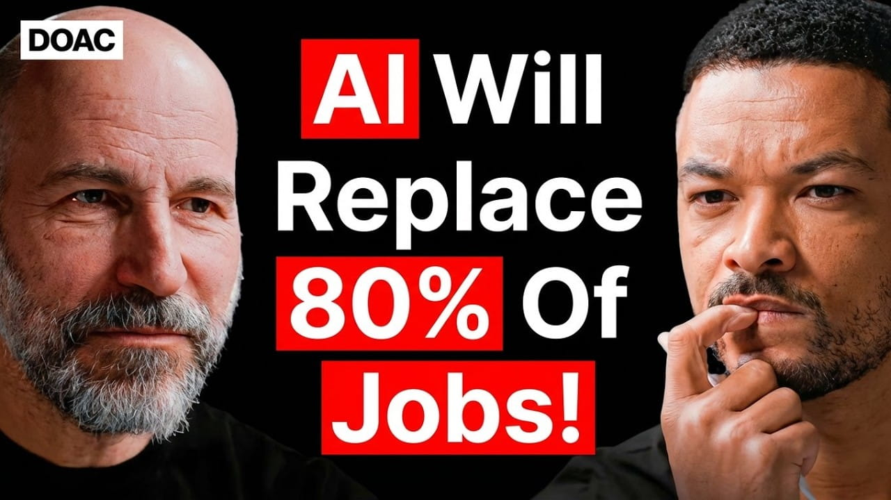

Uber CEO: I Have To Be Honest, AI Will Replace 9.4 Million Jobs At Uber! - Dara Khosrowshahi

Summary
In this case, the attention is drawn to the development of Dara Khosrowshahi as an entrepreneur and his ability to lead the transformation of different organizations, including Expedia and Uber, through proper management skills, cultural change, and ability to embrace technological innovations. The experience of Dara Khosrowshahi as a child who was forced to leave Iran as a refugee had a lot of impact on him and helped shape his character.
During the time he led Expedia, he emphasized efficiency and made many successful acquisitions. It can be said that one of the principles of his leadership style was putting emphasis on talent and betting on people, as well as restructuring the team and ensuring clear communication.
In his position at Uber, he took charge of a company that was suffering from various financial problems. In his tenure, he made sure that there were tough standards set for the employees but also encouraged open communication throughout the company. This conversation sheds light on the importance of the use of artificial intelligence to increase efficiency at Uber, as well as other companies, in operations like setting prices.
In general, this conversation gives the picture of Dara Khosrowshahi as a leader who is hard-working and highly adaptable, as he recognizes the necessity of both human management skills and new technologies for today’s businesses..
Speaker /(Guest): Dara Khosrowshahi
Interviewer / Host: Steven
Bartlett
Concept of the Interview: Relentless leadership, corporate transformation, and adapting to
technological disruption in modern business
Personal Opinion
The interviews that I attended have allowed me to learn about how and why AI could take away some jobs in the future and what kind of skills will not be valued in the future. They have also allowed me to learn about how successful and tough CEOs operate, mainly when it comes to working efficiently, having a lot of self-discipline and controlling everything. Nevertheless, from my personal point of view, many of these things seem quite extreme and hard for me to adopt because of the constant work pressure and the expectations at work. In case I was a CEO myself, I would behave like Gabe Newell.
Reflection
This interview helped me think more critically about leadership styles and the future impact of AI on employment. I realised that while technological progress can improve efficiency, it also raises important concerns about job displacement and the value of human work. It encouraged me to consider what kind of work environment I would want in the future and what kind of leader I would choose to become. I also learned that leadership can vary significantly depending on priorities, whether focused on maximum efficiency or employee well-being. Moving forward, I aim to develop a more informed and balanced perspective on work, leadership, and technology.
Date I Watched the Interview
July 9, 2026
New Vocabulary
- Corporate culture: the shared values, beliefs, and practices that define how employees interact and work together within an organization.
- Workforce displacement: the process by which technological advancements or other factors lead to the loss of jobs within a particular industry or sector.